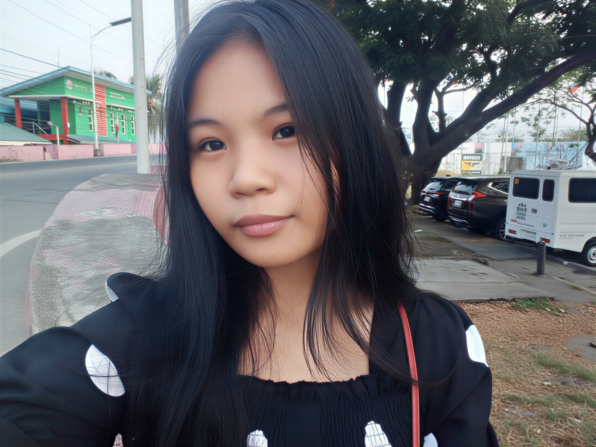

Danica Louisse Talusik
I am a BSIT student currently studying Web Systems and Technologies, with a growing interest in combining creativity with logic to create designs that are both functional and visually appealing.

I am a BSIT student currently studying Web Systems and Technologies, with a growing interest in combining creativity with logic to create designs that are both functional and visually appealing.